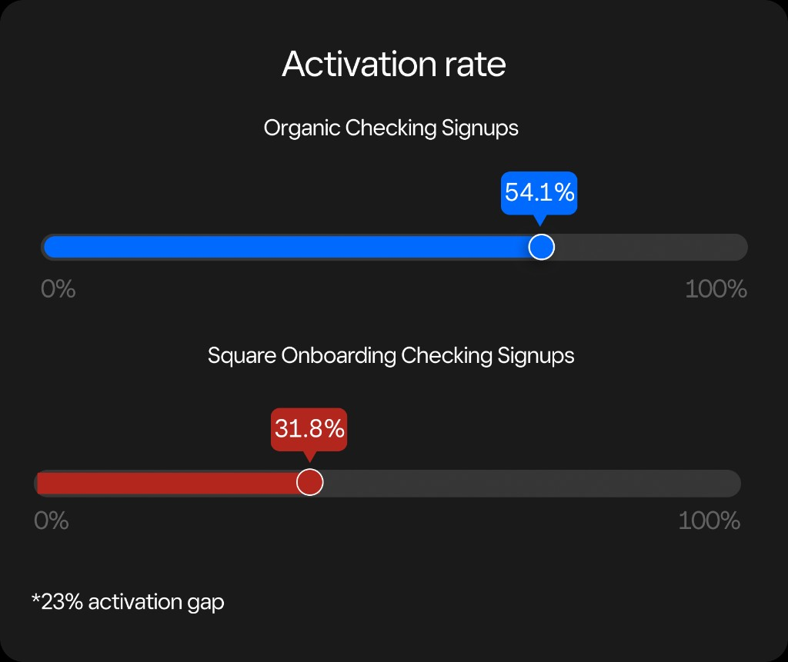
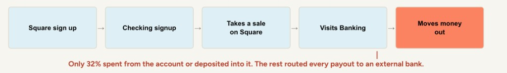
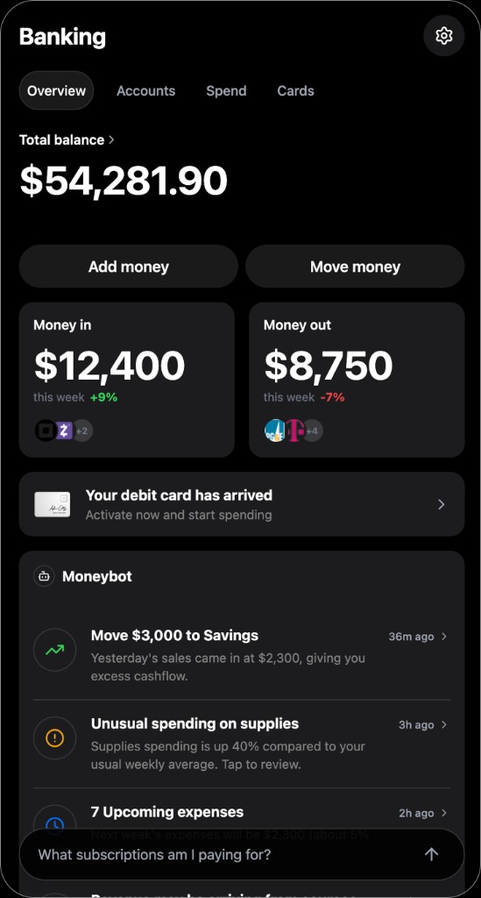
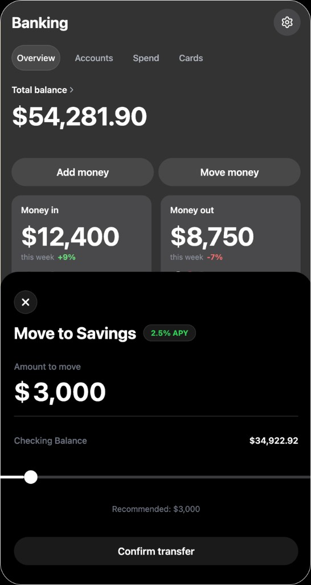
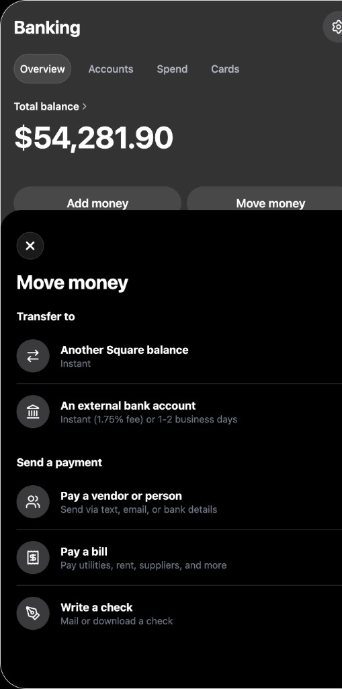
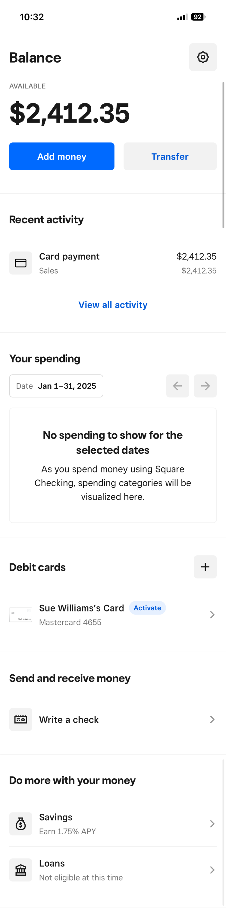
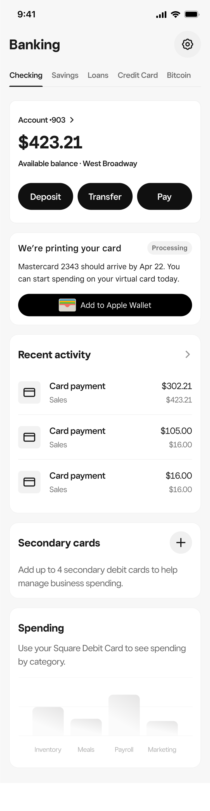

Square · Banking · Cycle Initiative (one quarter)
Closing the Activation Gap in Square Checking
Design DRI for a cross-surface initiative that shifted Square Checking from acquired accounts to active financial relationships by fixing seller mental models around activation and money movement, not signup volume.
54% → 59%
Activation
32% → 40%+
Onboarding activation
18% → 44%
Apple Pay / Wallet
29% → 51%
First card spend
Results
| Metric | Before | After |
|---|---|---|
| Activation | 54% | 59% |
| Onboarding activation | 32% | 40%+ |
| Apple Pay / Wallet | 18% | 44% |
| First card spend | 29% | 51% |
Sellers who treated Checking as their financial home activated faster, spent sooner, and kept money inside Square instead of routing payouts elsewhere.
Situation
Square scaled Checking enrollment through seller onboarding, but activation did not follow.
Onboarding-acquired sellers activated at roughly 32%, nearly 23 points below organic signups at 54%. Many completed identity verification yet never formed a banking relationship with Square.
Behavior told the rest of the story: sellers continued sending payouts to external banks, treating Checking as a pass-through rather than their business account. The gap was not awareness of the product. It was adoption of Square as a place to hold and move money.

Task
Reframe the problem from interface fixes to behavioral change.
The team initially treated low activation as a discoverability issue. Research and funnel analysis showed the opposite: sellers held the wrong mental model. They did not see Checking as a bank account. They saw it as another Square feature layered onto payments.
I reframed the work around jobs to be done:
- Recognize they have a business bank account at Square
- Access and understand their balance and payouts
- Spend from Square via debit card and digital wallet
- Move money on their terms without defaulting to an external bank
Success meant shifting activation and money movement behavior, not increasing signup volume.
Action
Three workstreams from diagnosis through alignment.
Discovery · Research and journey mapping
Partnered with PM and Data Science to map where activation broke down across signup, verification, first sale, and first transfer. The journey exposed a consistent pattern: sellers celebrated getting paid, then immediately looked for how to move money out, bypassing Checking entirely.

Strategy · Banking as financial home
Defined an experience strategy that positioned Square Banking as the seller's financial home, not a bolt-on to the payments stack. Prioritized three activation levers: account ownership, debit adoption, and in-product money movement.
This shifted roadmap conversations from feature parity to behavioral outcomes.
Alignment · North star and shared metrics
Checking touched Banking, Growth, and Platform teams with separate roadmaps. I facilitated alignment on a north star vision and a shared metrics framework around activation, first spend, and wallet adoption, so teams could prioritize independently without fragmenting the seller experience.
Exploration
Vision work that sharpened what to ship and what to defer.
As part of the Cash Flow team's north star work, I prototyped a modern money management hub in Cursor, exploring what Square Banking could become beyond activation fixes.
That included AI-powered insights and a Money Copilot concept: a way for sellers to ask banking and spending questions in real time, from cash flow trends to upcoming expenses.
The exploration was valuable, but the data was clear. Debit card activation and money movement were the strongest predictors of long-term engagement. That insight focused the roadmap on behaviors that mattered, not features that looked forward-looking but didn't move activation.



Design
Shipped redesigns across Checking home, debit card activation, and money movement, organized around spend and transfer behaviors rather than surface-level reorganization.
- Reinforced account ownership and payout visibility at the Checking home
- Accelerated debit card and Apple Pay / Wallet adoption paths
- Simplified money movement so sellers could act without leaving Square
Checking home · Before and after
Scroll inside each device to view the full screen.


System Impact
Established reusable patterns that extended beyond Checking.
- Shared activation framework adopted across Banking product areas
- Consistent mental model language (financial home, money movement, first spend) applied across POS and web
- Reusable patterns for account ownership, debit activation, and payout visibility surfaced in adjacent banking initiatives
- Cross-team metric alignment reduced conflicting priorities across Growth and Platform roadmaps
Results
Behavior changed, not just numbers on a dashboard.
Onboarding-acquired sellers began treating Checking as a real account. More completed activation, added cards to Apple Pay and Wallet, and made first purchases from Square-issued debit. That signaled the mental model had shifted.
Money movement patterns changed too. Sellers who previously routed payouts to external banks increasingly held and spent balances inside Square. Post-verification drop-off fell as the path from signup to first meaningful banking action shortened.
The work did not require major new functionality. It required clarity about what Checking is, how money flows, and why Square should be the place sellers manage it.
Reflection
Activation is a mental model problem.
Sellers did not fail to activate because they lacked buttons or labels. They failed because they never understood Checking as their bank. Fixing that required strategy, alignment, and behavioral design, not incremental UI polish.
At Staff level, the highest-leverage work was reframing the problem, aligning teams on shared outcomes, and using systems thinking (including AI-assisted exploration) to validate direction before scale. The metrics followed once sellers understood where their money lived and how to move it.
"Activation is a mental model problem, not a feature problem."
Core insight from this initiative